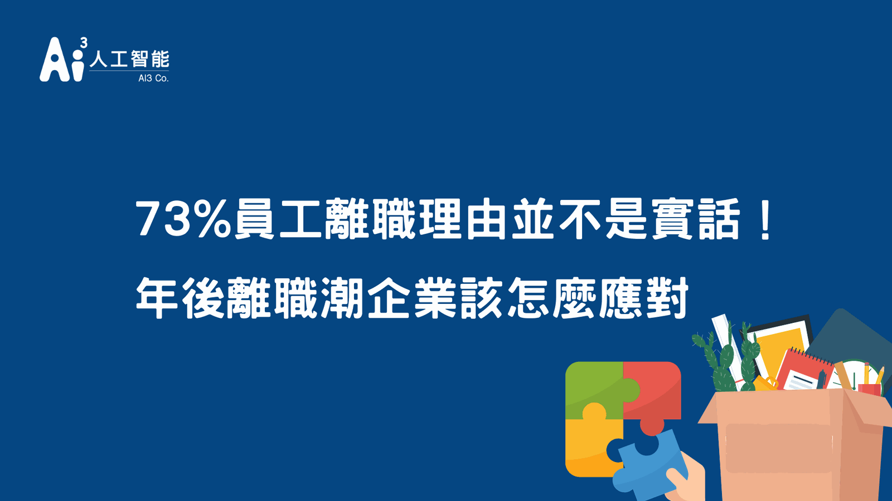

年節過後總是會出現一批領完年終轉職的員工，造成徵才上的困境，多數資方認為勞方不夠忠誠所以選擇離開，而在論壇上以「老闆：台灣人對公司忠誠度低」為題，指出台灣員工向心力低、忠誠度低、動不動就想離職，完全不像日韓員工。台灣企業應該要反思日本與韓國又是做了什麼讓員工甘願留下。
員工為何離職？離職理由解析
根據yes123求職網去年公布「上班族離職與企業留才調查」有73%員工向人資遞交辭呈理由不是真正的理由，而離職理由前四名分別為「職涯規劃」、「家庭因素」、「有進修深造計畫」、「身心健康因素」，而這些理由明顯看出員工並不想被挽留且想要好聚好散。有員工指出真的離職原因跟薪資福利、升遷、公司管理、企業文化有更大的關係，員工期望獲得平等待遇、成就感、組織歸屬感以及員工的決策自主權。
那企業又是怎麼想的呢？企業認為員工會離職可能是因為「薪資的問題」、「工作內容的問題」、「工作壓力的問題」，以及「獎金或分紅的問題」、「個人家庭因素的問題」，明顯的企業瞭解薪資可能無法給予與員工期望，但在員工提出的公司管理、企業文化卻沒在企業認為的因素之一，企業必須將這些納入原因進行省思。
降低離職率從底層了解員工
從五個層面的工作價值出發了解員工對於工作期待有什麼想法，於員工入職前進行工作價值測試（工作價值包含：成長價值、經濟報酬、人際價值、組織安定、變化性），瞭解新進員工想法外，也需要定期調查在職員工公司滿意度，對於公司、工作有什麼反饋，近一步改善讓員工喜歡這份工作喜歡公司，提升員工忠誠度。
許多員工會擔心員工滿意度不是匿名的，而不敢將真實想法訴說出來，現在有許多第三方員工滿意度調查可以協助企業，保障員工調查可信度。有這些第三方公司協助調查，每個員工可以放心說出提出建議，也許是給予員工更多安全感、可參考的企業文化、員工體驗與價值的提升。
做好雇主品牌連離職員工都願意回來
以消費者為例，消費者在購買產品時通常會有購買指標，舉例來說像是品牌名氣、服務、評價、理念、創新…等等，都為消費者購買產品考量。那求職者與員工在選擇公司的考量會又是什麼？近3年人力資源管理將雇主品牌設為一個指標，裡面包含十個維度作為人才求職考量的核心重點分別為「公司文化」、「員工評價」、「升遷機會」、「老闆及主管」、「同事」、「公司願景使命」、「公司聲譽」、「公司創新」、「用人理念」、「國際化」，為所有求職著參考標準，企業開始經營雇主品牌後提升員工對企業的滿意度之外也減少了招聘支出。
以上所談的內容皆與提升「員工體驗」有關，在數位世代企業更可以善用數位工具來驅動體驗，Ai3人工智能提供的智能機器人可即時為員工服務降低人資工作loading外，還能將員工所諮詢問題進行分析，人資透過員工所諮詢問題進行員工服務優化，讓員工能感到職場環境舒適且提升員工幸福感。
▶延伸活動推薦：【員工關係 X 雇主品牌 X AI客服】論壇
- 活動時間：2022年3月20日
- 活動內容：講者將分享如何建立員工關係與雇主品牌、人資領域與智能科技的應用、
主題論壇等精彩內容，為新時代人資帶來不一樣的觀點與啟發！
- 活動報名與詳情：https://www.accupass.com/go/hrfriday20220320
- 主辦單位：Ai3人工智能、HR人資小週末、104人力銀行